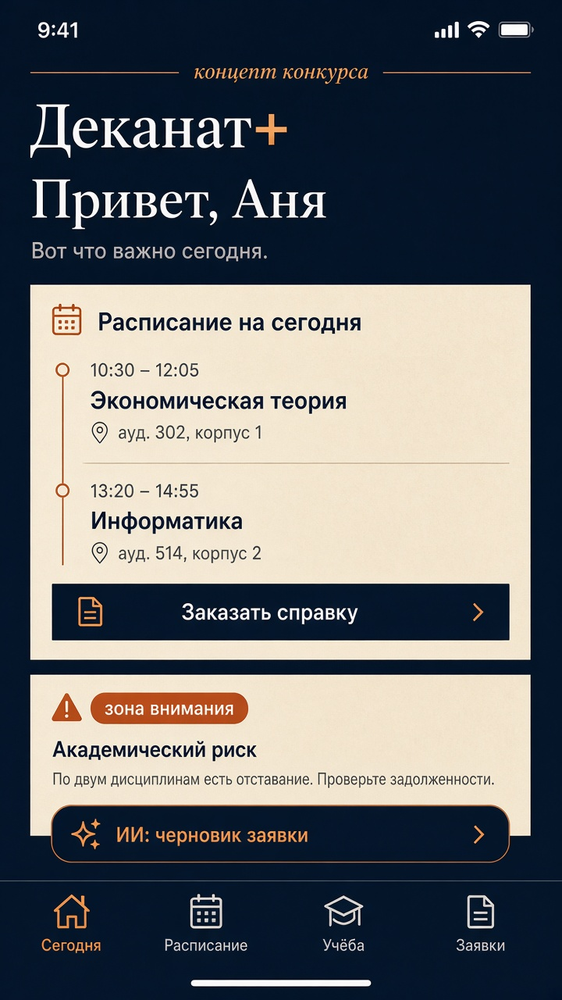
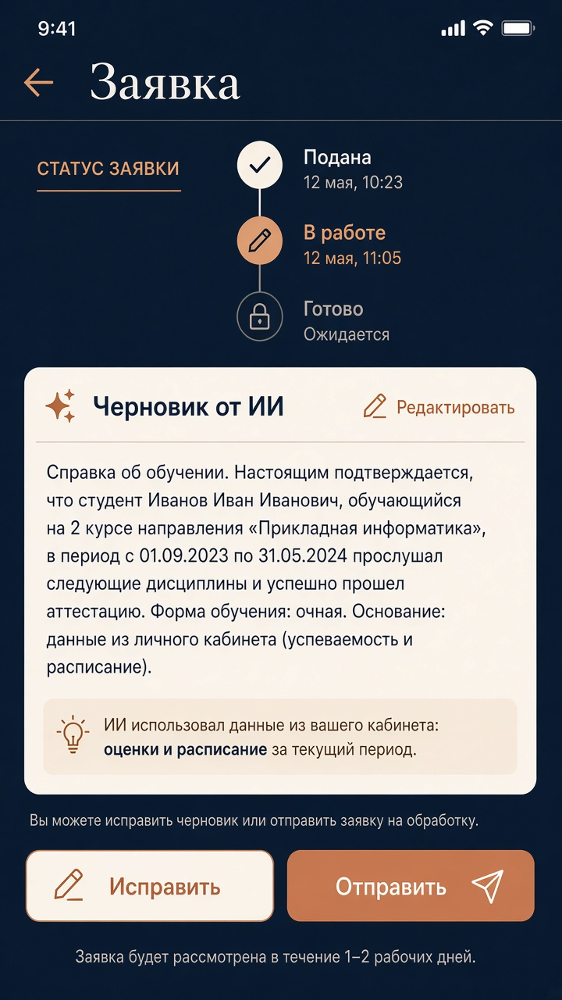

Защита стратегии для Максима и Романа: мы не «накидаем ЛК». Мы покупаем среднее по 4 критериям жюри — и под каждый критерий уже есть конкретный ход.
Итог = среднее экспертов по (Идея + ИИ-процесс + Имплементация + Качество) ÷ 4
Регламент: 4 критерия × до 10, итог — среднее всех экспертов. Красивый UI без PDF процесса или герой-фича без mobile = проигрыш по среднему.
Наш ответ: боли → сценарий → ИИ на данных кабинета → forensic process-log → RU-хост. Каждое «да» в скоупе должно поднимать критерий; иначе вычёркиваем.
Жюри смотрит: понятна ли боль, полные ли сценарии ядра, есть ли смелость.
Широкий срез: частоты болей (расписание / справки / «как дела» / уведомления). Черновик уже в docs/research/survey-draft.md.
Глубокий срез: формулировки, сценарии, «как должно быть». Два исследования разного масштаба = броня кр.1 в PDF.
Фрагментация сервисов · ад с телефона · чёрный ящик статуса справки · поздние переносы · «как у меня дела» · тонущие дедлайны. Плюс в PDF называем боли препода/деканата даже без их кабинета в v1.
docs/process-log/ + PDF сдачи: промпты, фейлы, субагентыCLAUDE.md / SCOPE — инструкции для агентовНе FAQ-бот «спроси что угодно про вуз».
Sign-off на Романе: агент собирает, Роман подтверждает «можно жюри».
| Must | Как доказываем |
|---|---|
| Живой URL из РФ без VPN | Timeweb/Yandex + mirror (не sole Vercel/Railway) |
| Ядро 5/5 на телефоне ≥360px | Демо-скрипт + чужой телефон |
| 2 аккаунта, изоляция | IDOR-попытка в демо |
| Пароли/секреты | Хеш паролей, env only |
| Только вымышленные данные | Seed A/B; RUZ публичный + fallback |
Боевой CLAUDE.md: TDD на критичной логике, мелкие коммиты, ADR, questions, pre-commit, release log (CHANGELOG.md).
Mobile-first · status theater заявок · empty/error/loading · свой визуал (ink/cream/copper), не purple-SaaS и не копия лого МГИМО.
Личный кабинет студента «цифровой деканат будущего»: всё ядро брифа в одном месте, один hero-сценарий (учёба → заявка → статус), ИИ на данных кабинета, живое расписание RUZ МГИМО + seed fallback. Это концепт конкурса, не офиц. сервис.
Home: пары + риск + CTA
Неделя, переносы, RUZ
Оценки + AI2 next actions
Статус-таймлайн + AI1
Направление визуала для согласования. Реальный UI соберём в коде; это «о чём спорим».

Home «Сегодня» — боль фрагментации + academic risk + вход в ИИ-заявку

Заявка — status theater + черновик ИИ (студент всегда подтверждает)
Отдельный вид home за 2 недели до сессии: зачёты/экзамены, что ещё не закрыто, какие справки часто просят. Сильный кр.1 без нового модуля.
В видео: логин B → вставка URL заявки A → «нет доступа». Превращает требование брифа в вау для кр.3/4.
Первый заход: «что бесит больше всего?» → персонализирует порядок виджетов (даже на seed). Мост к опросу.
Dual СамГТУ, LMS, админка сотрудника как столп, FAQ-чат без контекста — жрёт срок и среднее.